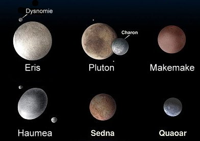

L'univers s'étend de l'infiniment petit à l'infiniment grand, la référence étant la taille de l'homme dont l'ordre de grandeur est le mètre.
La matière qui nous entoure, qu’elle soit inerte ou vivante, est constituée à partir d’atomes. Ces atomes peuvent s’assembler pour former des molécules. Ces molécules peuvent s’organiser de différentes façons pour façonner la matière. On citera à titre d’exemple les cellules qui sont constituées de molécules.
Dans l'infiniment grand on retiendra les étoiles (dont le Soleil fait partie), le système solaire comportant, outre le Soleil, huit planètes (Mercure, Vénus, Terre, Mars, Jupiter, Saturne, Uranus, et Neptune) Ainsi que les satellites de ces planètes, les astéroïdes et les comètes. Les étoiles sont regroupées dans des galaxies. Il existe un très grand nombre de galaxies. La galaxie dont fait partie le Soleil est la Voie Lactée (appelée aussi «notre Galaxie», ou «la Galaxie»).
Il existe une propriété commune aux structures infiniment petites et infiniment grandes. Il s'agit de la structure lacunaire. Dans une telle structure, la matière est assez bien localisée dans certaines régions de l'espace et entre ces zones où se concentre la matière il règne le vide où le quasi vide.
L'univers est très grand, cela nous le savons. Mais grand comment ? Je vous propose ici un petit voyage depuis notre système solaire jusqu'aux confins de l'univers. On mesure les distances interstellaires en années-lumière. Contrairement à ce que ce nom suggère, il s'agit bien d'une unité de distance et non de temps. L'année-lumière (AL) est la distance parcourue (dans le vide) par la lumière en une année. Question : sachant que la vitesse de la lumière est de 299 793,458 km par seconde, combien vaut une année lumière ? Allez, je vous donne la Réponse : un peu moins de dix mille milliards de kilomètres.
Le système solaire est le nom donné à notre système planétaire, composé du Soleil et de l'ensemble des objets célestes qui l'accompagnent et tournent autour de lui. Ceci inclut les planètes, leurs satellites, les comètes, les astéroïdes... L'âge du système solaire est estimé à 4,5 milliards d'années, environ.
Une planète naine, depuis la nouvelle définition de l'Union Astronomique Internationale d'août 2006, est un corps céleste en orbite autour du Soleil qui possède une masse suffisante pour que sa gravité l'emporte sur les forces de cohésion du corps solide et le maintienne en équilibre hydrostatique (sous une forme presque sphérique), qui n'est pas un satellite, mais qui n'a pas fait place nette dans son voisinage orbital.
Le statut de Charon, actuellement considéré comme un satellite de Pluton, est incertain. En effet, il n'existe pas de définition claire de ce qui constitue un système satellitaire ou un système binaire. Charon est largement plus grand que les autres satellites en comparaison de Pluton. Pluton et Charon orbitent tous les deux autour d'un point situé dans l'espace plutôt qu'à l'intérieur de Pluton. En conséquence, le système pourrait être désigné dans le futur comme un système planétaire double, faisant de Charon une planète mineure.
Le mot planète a pour origine le mot latin planetus, lui-même dérivé du mot grec planeta qui dans l'expression planêtes asteres désigne des "astres en mouvement"ou"astres errants", par opposition aux étoiles qui apparaissent immobiles sur la voûte céleste. Selon la nouvelle définition de l'Union Astronomique Internationale, une planète est un corps céleste qui est en orbite autour du Soleil, qui possède, une masse suffisante pour que sa gravité l'emporte sur les forces de cohésion du corps solide et le maintienne en équilibre hydrostatique (forme ronde),et qui a éliminé tout corps se déplaçant sur une orbite proche.